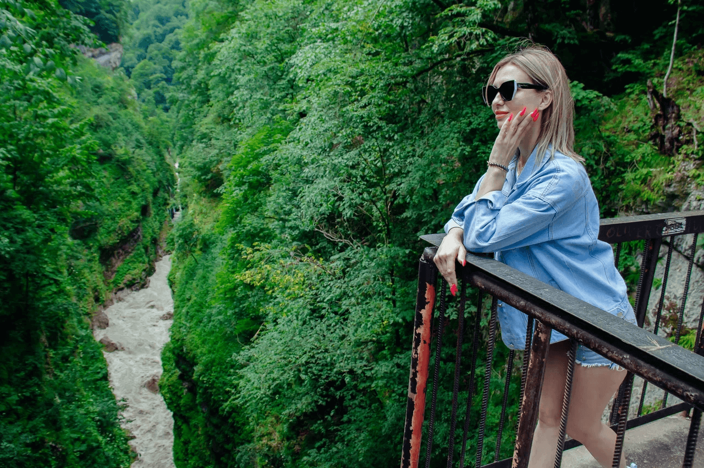
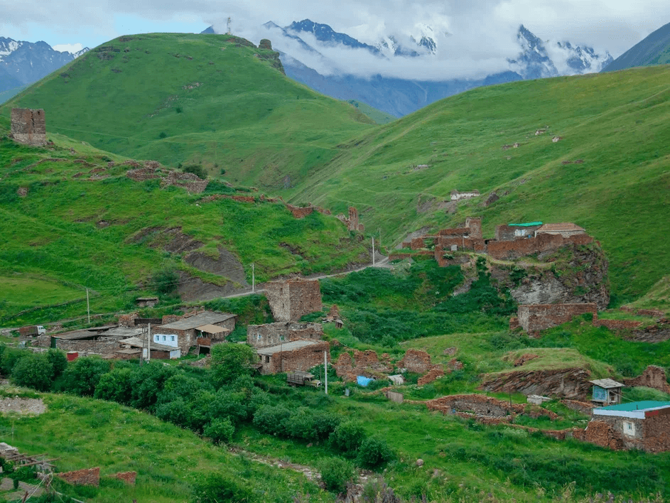
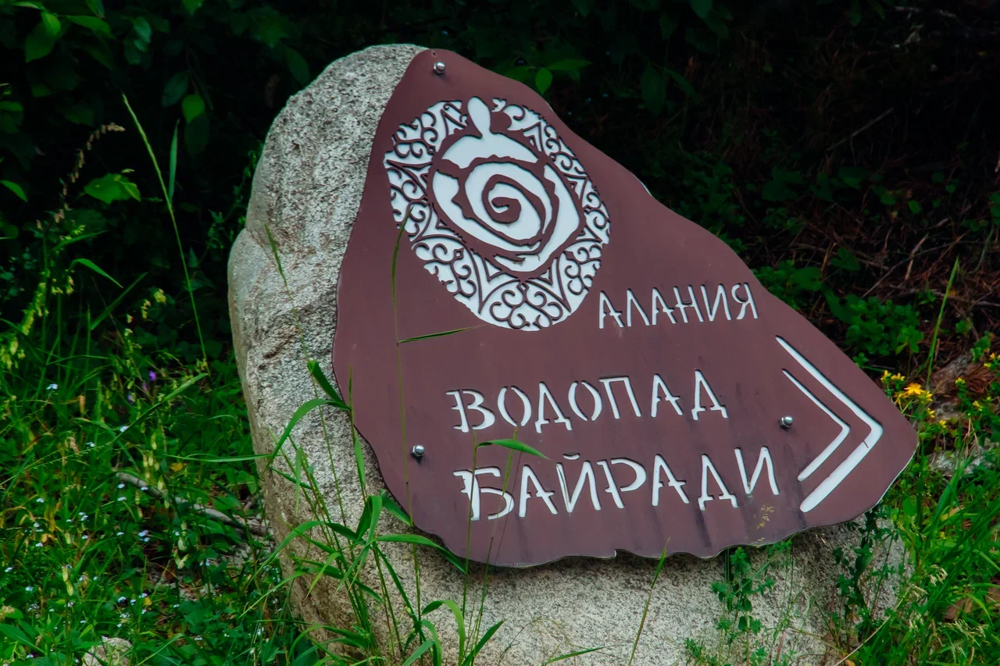
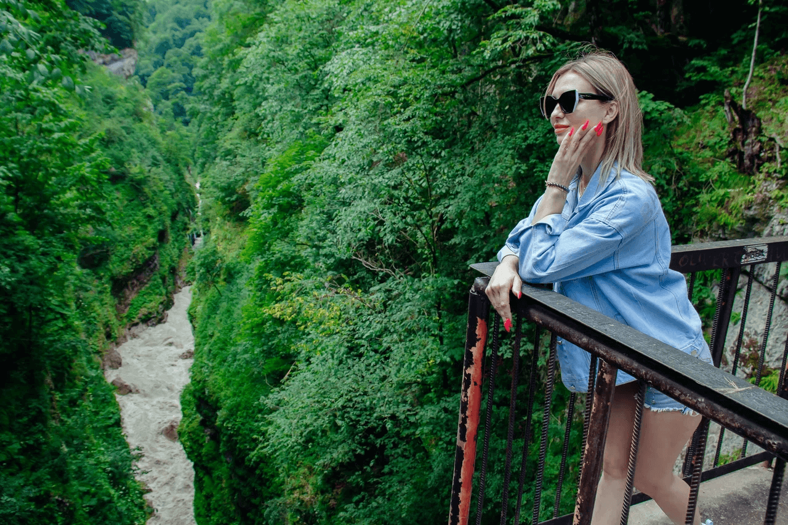
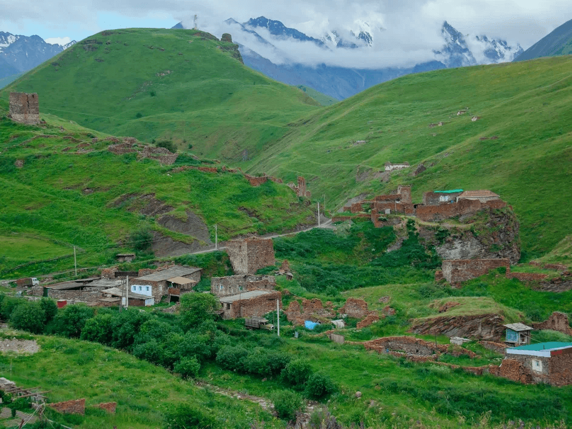
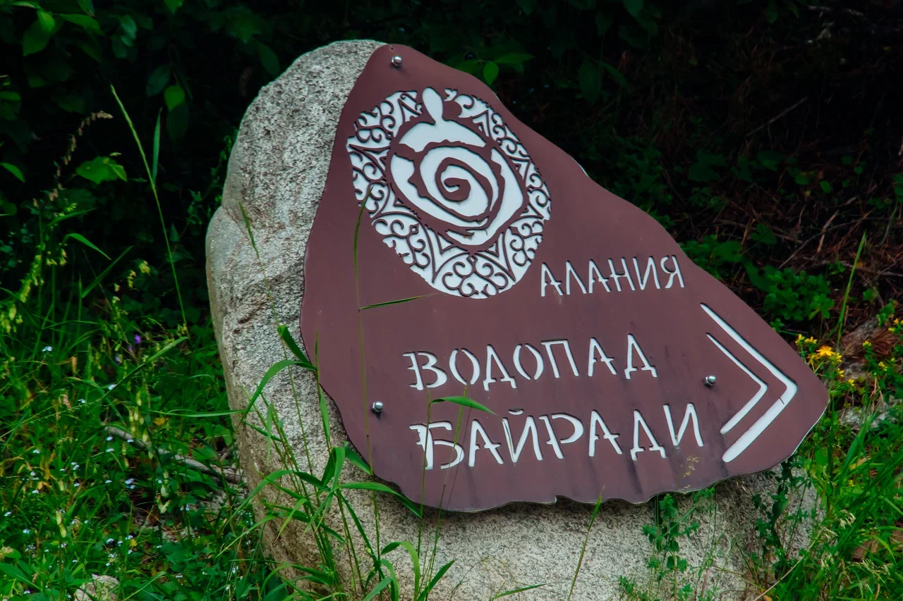
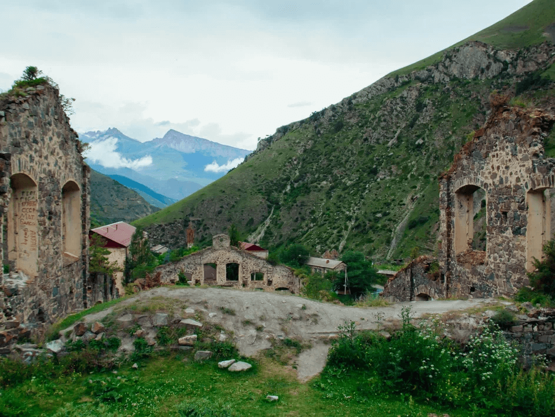
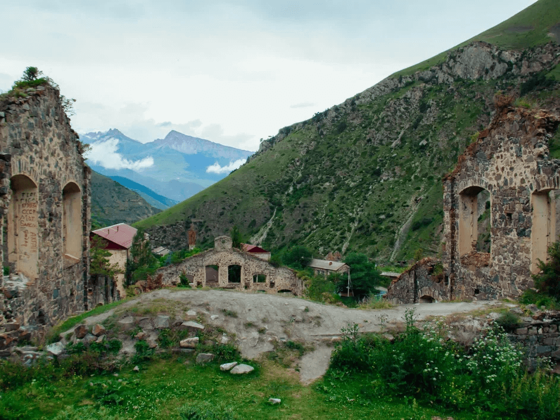

Поездки в Грузию из Владикавказа
Организуем встречу пассажиров на железнодорожных вокзалах и аэропортах городов Владикавказ и Беслан на внедорожнике Mitsubishi Delica на 7 посадочных мест и доставляем в Грузию по Вашему желанию в любой населенный пункт – Гудаури, Бакуриани, Тбилиси, Вардзия, Батуми, Кобулети и т.д.

Поездки в Грузию осуществляются круглый год, т.к. люди отдыхают здесь не только летом на теплом Черном море, но и зимой на знаменитых горнолыжных курортах Гудаури и Бакуриани, а также весной организуются сплавы по горным рекам, осенью — пешие туры, в любое время года можно съездить на экскурсии по Тбилиси, вы будете в восторге от увиденного!


Наши услуги
- Трансфер из аэропорта/жд вокзала до дома
- Поездки в горы Осетии, самые известные маршруты: городок мёртвых Даргавс, Фиагдон, Дигорское ущелье, Куртатинское ущелье, водопады Три сестры и Кольцо, Аланский мужской монастырь, святыня Мыды Майрам (от бесплодия), Аланский женский монастырь и др.
- Фотосессия в горах от профессионального фотографа - самые известные фотолокации: качели, буква, Бодров
- Услуги гида и проводника (небольшие восхождения)
- Поездки в Грузию

Описание
Проходимый внедорожник Mitsubishi Delica на 7 мест вас с комфортом доставит в любую высокогорную местность Осетии. Автомобиль рассчитан на самые экстремальные подъёмы в горах. Высокая посадка машины (лифт) позволит взобраться туда, где пешком не дойдёшь! Состояние авто - идеальное, я автомастер со стажем (в багажнике инструменты на все случаи жизни)!

Опытный водитель (бывший инструктор по экстремальной езде). К оправданному риску отнесусь с пониманием. Также помогу в разрешении многих вопросов: заселение, локации, развлечения, медицина (не дай Бог)!
Самые неизвестные и незабываемые маршруты - это дебри, вершины и ваши фантазии! Отвезу куда захотите! На меня можно положиться! Моральноустойчив, крепок, вынослив, адекватен, с чувством юмора по запросу.
Внизу вас будет ждать ароматный чай с горным сыром или что покрепче! По запросу клиента можно организовать пикник на природе: шашлыки, горячий хрустящий лаваш, напитки на выбор. Развлечения - какие только захотите: конные поездки, параплан, парашютные прыжки, колесо обозрения, рыбная ловля, лыжня и многое другое!
Готов встретить с аэропорта и жд вокзала Владикавказа, довести до адреса проживания и быть надёжным другом и водителем весь ваш отпус! Хорошо готовлю, воспитан, знаю с отличием три языка : русский, осетинский, грузинский.
Фото галерея
 





 

Контакты
С нами можно связаться по телефону: +7 (928) 482-26-60
График работы: ежедневно 9 до 18
Место сбора во Владикавказе: напротив здания ГМТ время сбора: с 6.30 до 7.30
Место сбора в Тбилиси: станция метро “Руставели” Макдональдс